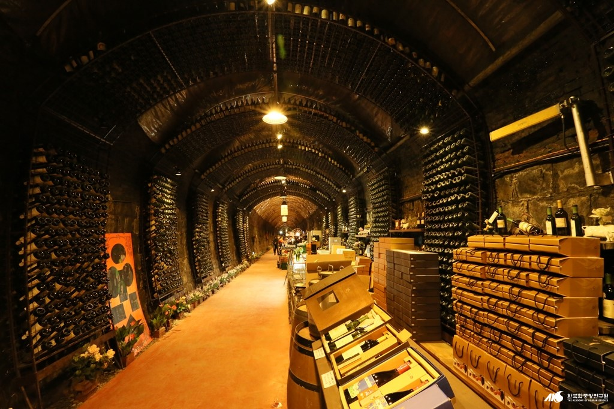
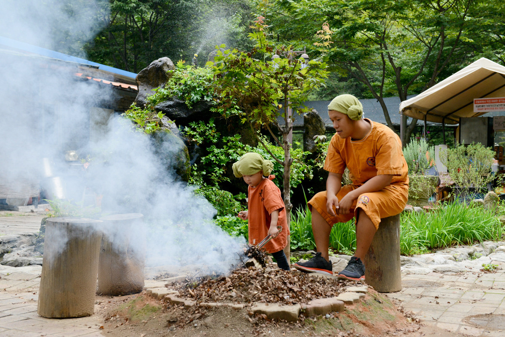

폐철로를 활용한 레일바이크로 청도의 아름다운 자연 경관을 즐길 수 있는 체험 시설입니다. 약 5.2km 구간을 달리며 청도천변의 풍경을 감상할 수 있으며, 봄에는 벚꽃 터널이 장관을 이룹니다. 터널 구간에는 화려한 LED 조명이 설치되어 낮과 밤 모두 색다른 즐거움을 선사합니다. 가족, 연인, 친구와 함께 즐길 수 있는 청도의 대표 체험 명소입니다.
주변 관광지: 풍각면 일대 자연경관, 청도반시 과수원(가을 수확기), 풍각 온천(차량 10분)
인근 맛집: 청도레일바이크 내 카페, 풍각 로컬 식당가(차량 5분)
인근 숙박: 청도자연휴양림(차량 20분), 풍각면 펜션 단지(차량 10분)

청도 와인터널
주소
경상북도 청도군 화양읍 송금길 100
연락처
054-371-1310
운영시간
09:00 ~ 18:00 (연중무휴)
이용요금
입장료 무료 / 시음 및 구매 별도
일제강점기에 조성된 약 1km의 철도터널을 와인 숙성 저장고로 활용한 청도의 대표 관광지입니다. 연중 13~15°C의 일정한 온도와 85% 이상의 습도를 유지하여 와인 숙성에 최적의 환경을 자랑합니다. 청도 특산품인 반시(납작감)로 만든 감와인을 직접 시음하고 구입할 수 있으며, 청도와인학교에서 와인 제조 체험도 가능합니다. 터널 내부의 환상적인 조명과 함께 색다른 경험을 선사합니다.
주변 관광지: 청도역(도보 5분), 청도읍성(차량 5분), 막걸리촌(도보 10분)
인근 맛집: 청도막걸리촌(도보 10분), 와인터널 내 레스토랑
인근 숙박: 청도 관광호텔(차량 5분), 청도역 인근 숙박시설

청도 소싸움 경기장
주소
경상북도 청도군 화양읍 남성현로 348
연락처
054-370-7500
경기 일정
매주 토·일요일 12:00부터 12경기 진행
입장료
성인 5,000원 / 청소년 3,000원 / 어린이 2,000원
세계 최초 돔형식 소싸움 전용 경기장으로, 청도소싸움축제의 상설 경기장입니다. 매주 토·일요일 12시부터 12경기가 진행되며, 전국 각지에서 선발된 황소들이 박진감 넘치는 대결을 펼칩니다. 약 2,500명 수용의 관람석과 쾌적한 시설을 갖추고 있으며, 소싸움 박물관과 체험관도 함께 운영합니다. 매년 봄에는 청도소싸움축제가 개최되어 더욱 많은 관람객이 찾습니다.
주변 관광지: 청도읍성(차량 3분), 청도와인터널(차량 5분), 청도 프로방스(차량 10분)